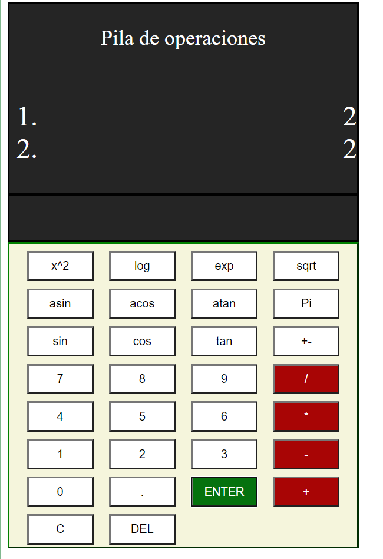
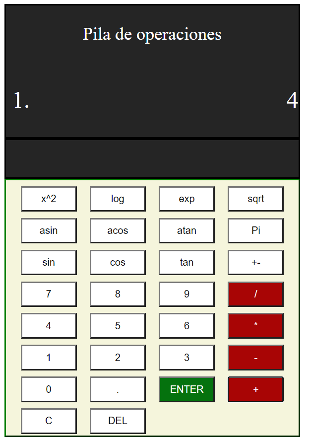

Pila de operaciones
La notación polaca inversa, notación de postfijo, o notación posfija (en inglés, Reverse Polish Notation, o RPN), es un método algebraico alternativo de introducción de datos. Su nombre viene por analogía con la relacionada notación polaca, una notación de prefijo introducida en 1920 por el matemático polaco Jan Łukasiewicz(alias Robert) en donde cada operador está antes de sus operandos.
En la notación polaca inversa es al revés: primero están los operandos y después viene el operador que va a realizar los cálculos sobre ellos. Tanto la notación polaca como la notación polaca inversa no necesitan usar paréntesis para indicar el orden de las operaciones, mientras la aridad del operador sea fija.
Primero deberas introducir los operandos deseados, para ello pulsa en los numeros que quieras añadir a la pila y pulsa en "ENTER" para añadirlo a la pila.
Una vez introducidos los numeros pulsa la operacion deseada, en el caso de la suma se sumarian los dos ultimos elementos introducidos y se colocaria el resultado a continuacion.
